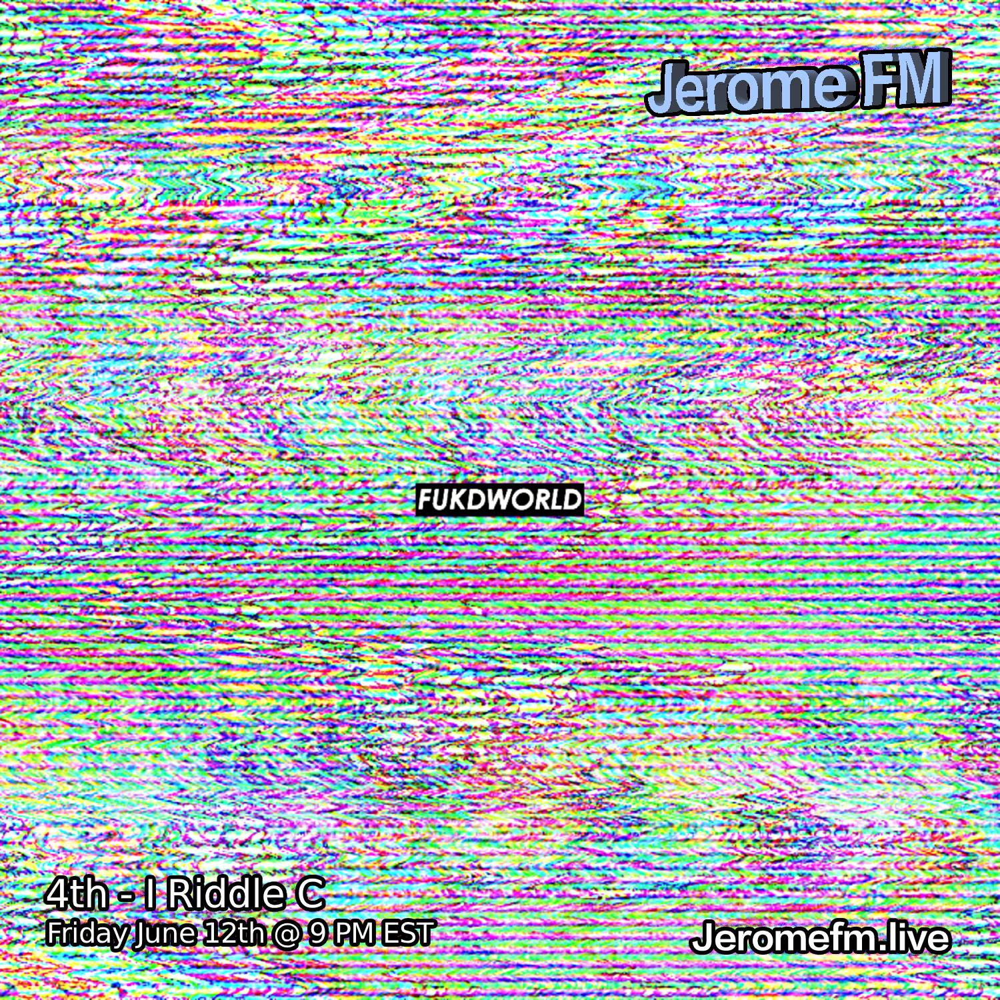

4th-I Riddle C
June 13th, 2026

← Listen on SoundCloud →
An individual of the free world. An artist of no form, standing on ten toes and striving for stability through the mask of self-expression. The medium presented is expressed through the creation of Chopped & Slowed music (shout out to DJ Screw, originator of Chopped & Screwed music) and instrumentals sampled from sounds across the world.
4th-I Riddle C’s alias is associated with the collectives ReignCloudMusic,4th-I, and FUKDWORLD. Stay tuned for deeper insight into the matrix of 4th-I Riddle C — “Live From Da Simulation.”
← Back to Shows